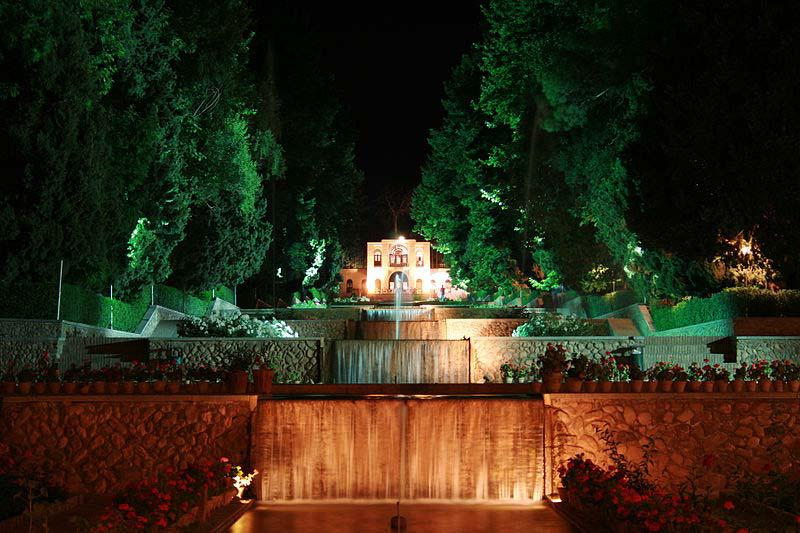

Dars-e 16 — Moallem‐e Susan
Matn ♫ Moallem‐e Susan
Dabirestān‐e Susan moallemin‐e xeyl‐i xub‐i dārad. Moallem‐e adabiyāt‐e Susan besyār‐i az aš’ār‐e šoarā‐ye irāni rā azbar midānad. U dars‐aš rā hamiše bā yek‐i az hekāyāt‐e Sa’di āqāz mikonad. Hargāh ke dānešāmuz‐i eštebāh mikonad, u yek beyt az yek še’r‐e āmuzande rā barā‐yaš bāzgu mikonad. Gāh‐i ham az abyāt‐e bištar‐i estefāde mikonad. U yek moallem‐e delsuz‐ ast va hamiše be vazāyef‐e xod amal mikonad.
Pāsox bedeh!
1. Madrese‐ye Susan cejur āmuzgārān‐i dārad?
2. Moallem‐e adabiyāt‐e Susan ce cizhā‐yi rā azbar midānad?
3. U cegune dars‐aš rā šoru’ mikonad?
4. Harvaqt yek šāgerd eštebāh mikonad, u cekār mikonad?
5. Āyā moallem‐e Susan ādam‐e vazifešenās‐i‐st?
Sāxtār Moallem‐e Susan
Irān‐o irāni Bāqhā‐ye irāni
Goftogu Cand šab eqāmat mikonin?
Sāxtār
Jam’‐e arabi bā “‐āt”
MofradJam’
enteqādenteqādāt
Nokte
- Barx‐i az vāmvāžehā‐ye arabi surat‐e jam’‐e xod rā negah dāšte‐and. - Jam’‐e arabi kamābiš biqāede‐ast. - Jam’ bā “‐āt” gāh‐i barā‐ye vāžehā‐ye fārsi niz be kār miravad: deh, dehāt.
Āvā‐ye miyānji
mivesabzi
mivejātsabzijāt
Hazf‐e āvā
kalame
kalam~~e~~āt
Jam’‐e arabi bā “‐in”
MofradJam’
moallemmoallemin
Degarguni‐ye āvāyi
enqelābi
enqelābi~~i~~yun
Jam’‐e šekaste‐ye arabi
MofradJam’MofradJam’MofradJam’MofradJam’
| hadaf | ahdāf | markaz | marākez | harf | horuf | rais | roasā |
| raqam | arqām | mowred | mavāred | fasl | fosul | xalife | xolafā |
| adad | a’dād | mas’ale | masāel | qarn | qorun | ālem | olamā |
Haryek az esmhā‐ye sotun‐e B jam’‐e kodām esm az sotun‐e A‐ast? Šomāre‐ye ān rā benevis!
| A | B | Šomāre |
| 1‐ mowze’ | sāreqin | 7 |
| 2‐ šekl | molāhezāt | |
| 3‐ moxālef | anāsor | |
| 4‐ mantaqe | foqahā | |
| 5‐ onsor | manābe’ | |
| 6‐ faqih | aškāl | |
| 7‐ sāreq | madāres | |
| 8‐ molāheze | moxālefin | |
| 9‐ madrese | manāteq | |
| 10‐ manba’ | mavāze’ |
Irān‐o irāni – Bāqhā‐ye irāni
Šive‐ye bāqsāzi dar Irān az gozašte šohrat‐e jahāni dāšte‐ast va pišine‐ye ān be bāq‐e Majmue‐ye Pāsārgād, pāytaxt‐e Kuroš‐e Bozorg, dar sade‐ye 6om‐e piš az milād miresad. Bāqhā‐ye irāni dar qadim pardis nām dāštand. Vāžehā‐ye paradise,* Paradis, … dar zabānhā‐ye orupāyi *bargerefte az hamin vāže hastand.
Bāqsāzi‐ye irāni tarrāhi‐ye bāq rā az Hend tā Espāniyā va az tariq‐e ān tā digar kešvarhā‐ye orupāyi taht‐e ta’sir‐e xod qarār dād. Nemunehā‐ ye ta’sir‐e sabk‐e irāni rā mitavānim dar Tājmahal dar Hend va Alhambrā dar Espāniyā bebinim.
Bāqhā‐ye irāni namād‐i az sabk‐e zendegi va zowq‐o honar‐e irāni hastand. Dar še’r, adab, musiqi va hattā tarh‐e faršhā‐ye irāni ešārehā‐ye farāvān‐i be bāq‐e irāni mibinim. Tarrāhi‐ye hušmandāne‐ye bāq hamrāh bā sāxtemānhā‐ye darun‐e ān, Kārbord‐e fanāvarihā‐ye gunāgun az qabil‐e sāmānehā‐ye ābresāni‐yo ābyāri va niz tavānāyi‐ye pāsoxguyi be šarāyet‐e saxt‐e ābohavāyi az vižegihā‐ye bāqhā‐ye irāni hastand.
Tā konun candin nemune az bāqhā‐ye irāni, ce dar Irān va ce xārej az Irān, az su‐ye UNESCO dar Fehrest‐e Mirās‐e Farhangi‐ye Jahān jāy gerefte‐and. Az zibātarin bāqhā dar Irān mitavānim az Bāq‐e Eram dar Širāz va Bāq‐e Šāzde dar Māhān nām bebarim.
Pāsox bedeh!
- Tārixce‐ye bāqhā‐ye irāni az key va kojā āqāz mišavad? 2. Sabk‐e bāqsāzi‐ye irāni ce manāteq‐i az jahān rā taht‐e ta’sir‐e xod qarār dāde‐ast? 3. Barā‐ye in ta’sir ce nemunehā‐yi rā mišenāsi? 4. Cerā bāq‐e irāni namād‐i az sabk‐e zendegi‐ye irāni‐st? 5. Šive‐ye bāqsāzi‐ye irāni ce vižegihā‐yi dārad? 6. Kodām bāqhā‐ye irāni rā mišenāsi?
Goftogu – Cand šab eqāmat mikonin?
Mas’ul‐e pazireš: Salām! Xeyl‐i xoš āmadin! Befarmāyin!
Āqā‐ye Tehrāni: Salām. Bande Tehrāni hastam. Otāq‐e dotaxte‐ye xāli dārin? Mas’ul‐e pazireš: Cand šab eqāmat mikonin?
Āqā‐ye Tehrāni:Do šab.
Mas’ul‐e pazireš: Ye dotaxte‐ye xāli dārim, ru be daryā, šab‐i 150,000 Toman, hamrāh bā sobhāne. Āqā‐ye Tehrāni: Besyār xob. Hamun‐o bedin.
Mas’ul‐e pazireš: Lotf konin, in form‐o por konin. Injā r‐am emzā befarmāyin. Āqā‐ye Tehrāni: Befarmāyin!
Mas’ul‐e pazireš: Lotfan kārt‐e melli‐tun‐am lotf befarmāyin. Āqā‐ye Tehrāni: Befarmāyin!
Mas’ul‐e pazireš: In‐am kelid‐e otāq‐etun. Otāq‐e 701, tabaqe‐ye haftom. Āsānsor tah‐e rāhrow‐e. Āqā‐ye Tehrāni: Mamnun! Sobhāne tā ce sāat‐i‐ye?
Mas’ul‐e pazireš: Az haft tā dah‐o nim‐e sobh tu sālon‐e qazāxori, tabaqe‐ye avval. Camedunā ro in āqā barā‐tun miāran bālā. Āqā‐ye Tehrāni: Xeyl‐i mot’šakker‐am!
Nokte
| Goftāri | Neveštāri |
| āmadin | āmadid |
| befarmāyin | befarmāyid |
| dārin | dārid |
| mikonin | mikonid |
| ye | yek |
| Toman | Tumān |
| xob | xub |
| hamun‐o | hamān rā |
| konin | konid |
| form‐o | form rā |
| injā r‐am | injā rā ham |
| kārt‐e melli‐tun‐am | kārt‐e melli‐tān ham |
| in‐am | in ham |
| otāq‐etun | otāq‐etān |
| tah‐e rāhrow‐e | tah‐e rāhrow‐ast |
| tā ce sāat‐i‐ye | tā ce sāat‐i‐st |
| tu | tu‐ye/dar |
| camedunā | camedānhā |
| miāran | miāvarand |
| motšakker‐am | motešakker‐am |
Ebārathā/vāžehā
Telefoni rezerv kardam – otāq‐e šomā āmāda‐st (āmāde‐ast) Yetaxte – setaxte – ru be jangal
Šenāsnāme – gozarnāme – pāsport
Bā estefāde az ebārathā/vāžehā goftogu‐ye bālā rā bā hamkelāsi‐yat tamrin kon! Goftogu‐ye behamrixte rā morattab kon va be zabān‐e neveštāri benevis!
– Mamnun Āqā‐ye Pāknežād. In‐am kelid‐e otāq etun. Otāq‐e 312, tabaqe‐ye sevvom. In āqā šomā ro rāhnamāyi mikonan.
– Bande Pāknežād hastam. Diruz ye otāq‐e dotaxte barā‐ye xodam‐o hamsar‐am telefoni rezerv kardam.
– Sepāsgozār‐am.
– Xoš ādamin! Befarmāyin!
– Bale, albatte. Otāq‐e šomā āmāda‐st. Lotfan in form‐o por konin‐o emzā konin.
– Befarmāyin!
__
__
__
__
__
__
Vāžehā-ye dars-e
Pasoxhā-ye dars-e
Haryek az esmhā‐ye sotun‐e B jam’‐e kodām esm az sotun‐e A‐ast? Šomāre‐ye ān rā benevis!
| A | B | Šomāre |
| 1‐ mowze’ | sāreqin | 7 |
| 2‐ šekl | molāhezāt | 8 |
| 3‐ moxālef | anāsor | 5 |
| 4‐ mantaqe | foqahā | 6 |
| 5‐ onsor | manābe’ | 10 |
| 6‐ faqih | aškāl | 2 |
| 7‐ sāreq | madāres | 9 |
| 8‐ molāheze | moxālefin | 3 |
| 9‐ madrese | manāteq | 4 |
| 10‐ manba’ | mavāze’ | 1 |
Goftogu‐ye behamrixte rā morattab kon va be zabān‐e neveštāri benevis!
– Xoš āmadid! Befarmāyid!
– Bande Pāknežād hastam. Diruz yek otāq‐e dotaxte barā‐ye xodam‐o hamsar‐am telefoni rezerv kardam.
– Bale, albatte. Otāq‐e šomā āmāde‐ast. Lotfan in form rā por konid‐o emzā konid.
– Befarmāyid!
– Mamnun Āqā‐ye Pāknežād. In ham kelid‐e otāq‐etān. Otāq‐e 312, tabaqe‐ye sevvom. In āqā šomā rā rāhnamāyi mikonand.
– Sepāsgozār‐am.
agar если agarce хотя alāve bar in кроме того āmāde готовый ammā но āntaraf там āšqāl мусор az ānjā ke потому что az in jahat поэтому az in ru поэтому az mowqe-i ke поскольку az vaqt-i ke поскольку āžāns агентство bā ān ke хотя bā in hāl тем не менее bā in vojud тем не менее bā vojud-e in тем не менее bā vojud-e in ke хотя ba’d az in ke после balke но banā bar in поэтому bānešāt живой barā-ye in ke чтобы bargozidan (gozin) выбрать be dalil-e ān ke потому что be in dalil по этой причине be jā-ye ān ke вместо be jā-ye in ke вместо be sabt residan (res) быть зарегистрированным be šart-e in ke при условии, что be xāter-e in ke потому что bed-in tartib таким образом bed-in vasile при этом be dun-e inke без того чтобы bi ān ke без того чтобы binande зритель ceciz какие cešme источник conānce если conke поэтому dar hāl-i ke в то время как dar natije в результате dar surat-i ke в то время как darmāni терапевтический ehsās kardan (kon) чувствовать en’ekās отражение eqtesādi экономической ešterāk подписка forudgāh аэропорт garce хотя gāzdār карбонизированный gitār гитара hal kardan (kon) решить, прийти к выводу haminke как только harsāl ежегодно hengām-i ke пока hezārān тысячи hicgāh никогда howzce бассейн jenāb превосходство kalsiyom кальций kilumetr километр kuhestān горы lāye уровень masāref применения, использования moqābel-e визави, напротив mošābeh аналогичный moškelāt трудности moštarek общий; подписчик motorsiklet мотоцикл na tanhā не только nur свет parvāz полет pas az in ke после piš az in ke перед тем pormašqale очень занят pornešāt живой qābeletavajjoh примечательный qabl az in ke перед тем qesmat часть, доля rāhāhan железная дорога rangin красочный rosubāt отложения rosubi осадочный sang камень sarāzir šodan (šav, šow) стекать sarehāl здоровый, подтянутый šarif почетный šarqi восточный šart условие sarzende живой satl ведро sāyerowšan контрастность šegeftangiz замечательный šegeftzade пораженный sen(n) возраст šomāretelefon номер телефона tābeš радиация tabiat природа tāksiservis компания такси talāyi золотой tamannā kardan (kon) спросить tamrin kardan (kon) практика taqāzā kardan (kon) спросить, попросить tartib заказ tašrif bordan (bar) идти termināl терминал toršoširin сладко-кислый vagarna в противном случае vaqt-i ke в то время как varzeškār спортсмен xiš сам по себе xoršid солнце (خ___) yeknavāxt скучный; монотонный zirā потому что zirāke потому что